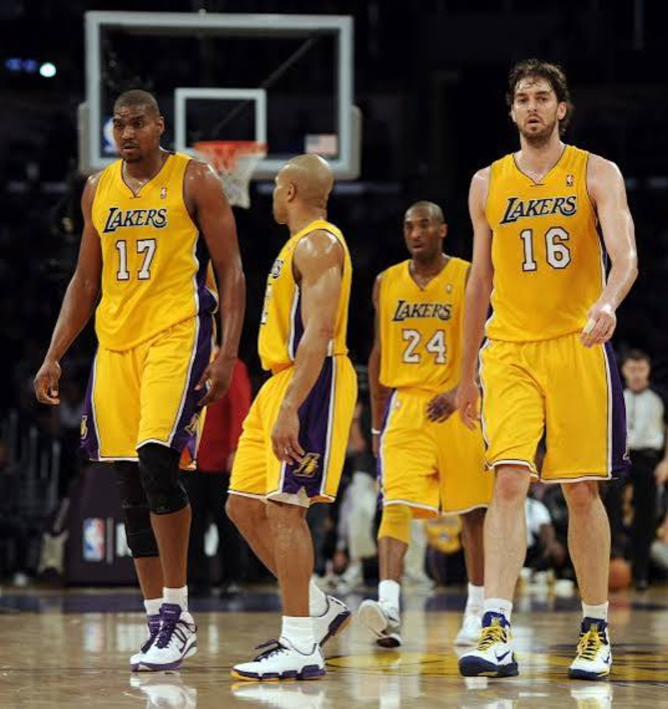
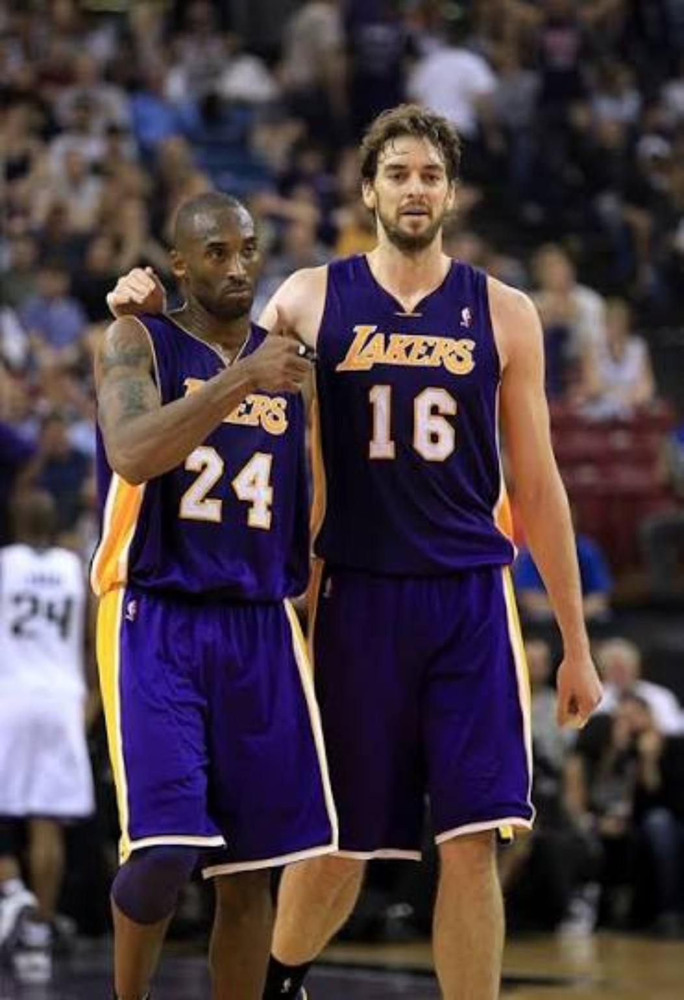
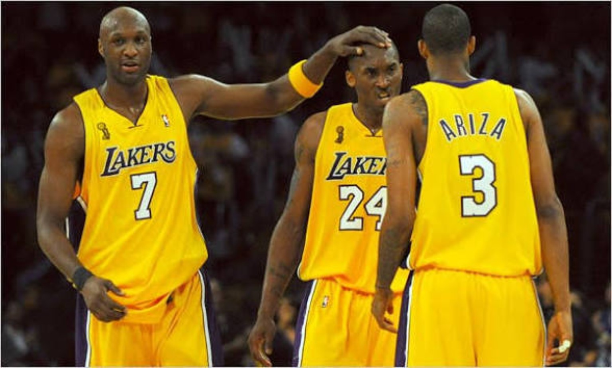
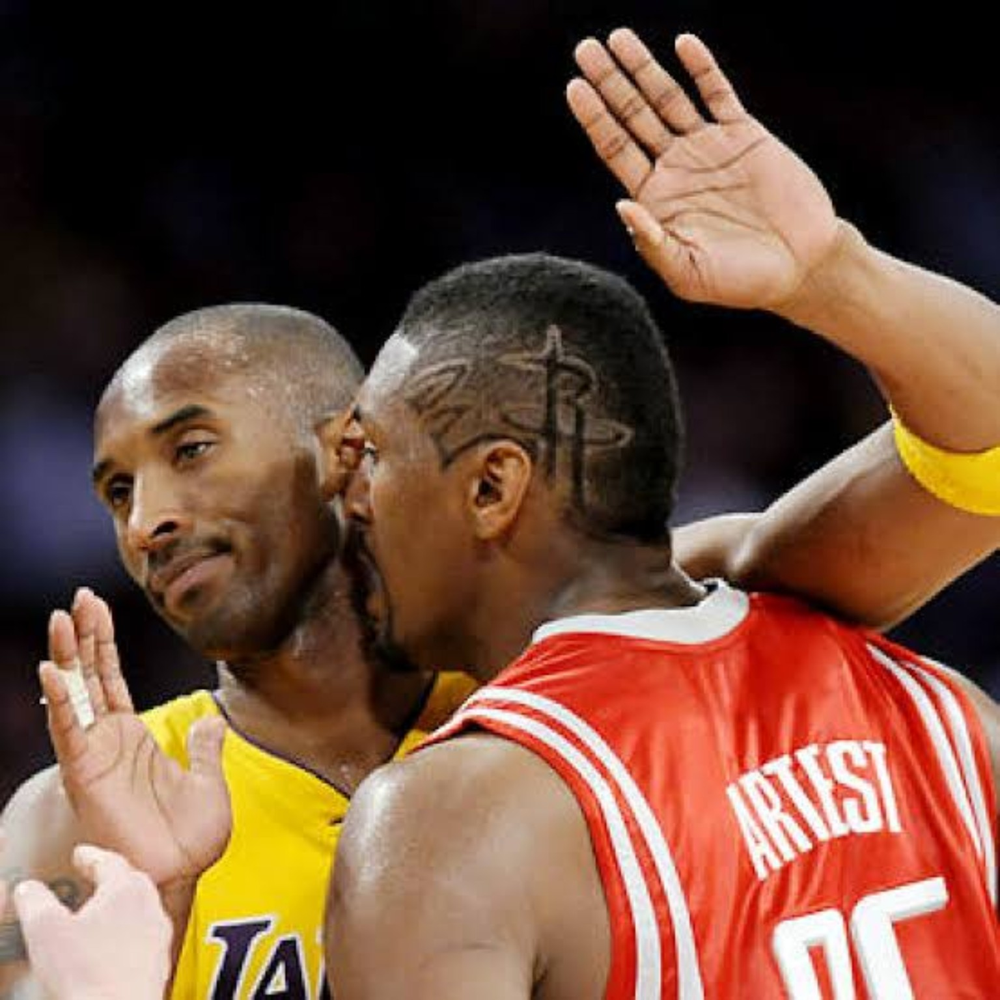
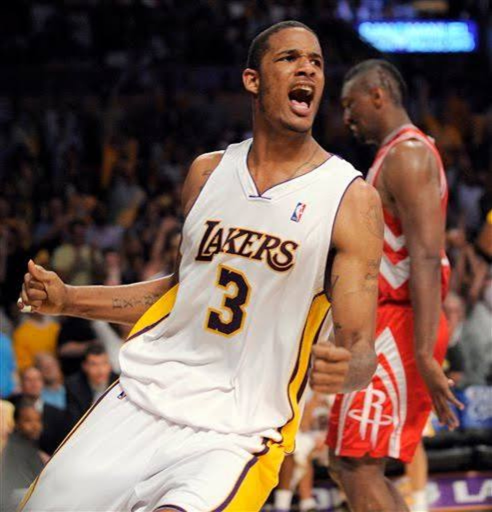
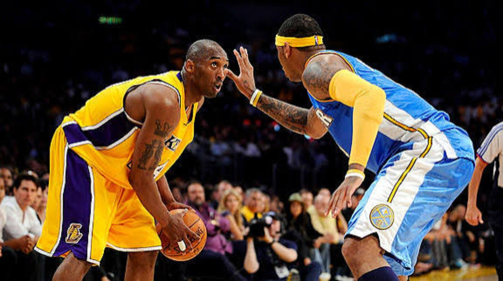
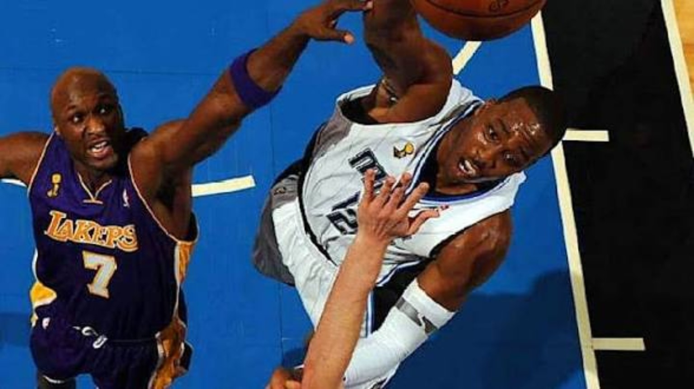
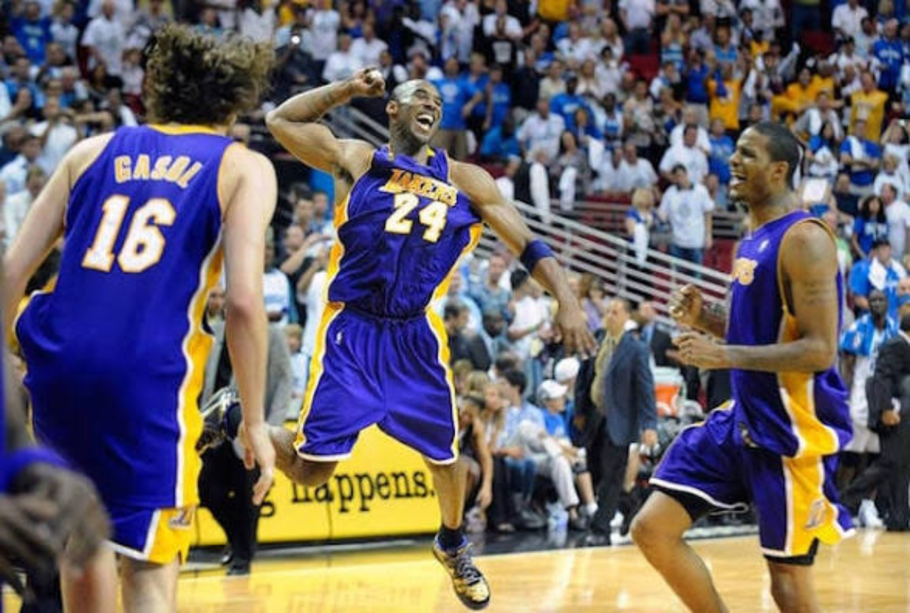
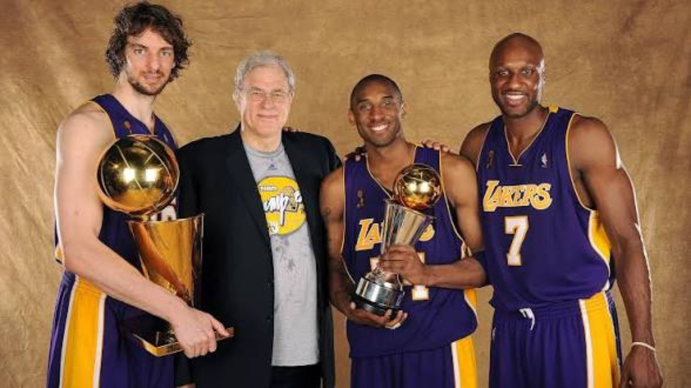

At 30, he knew when to score, when to facilitate and when to take control. The game looked easy — and the roster was finally built to finish what Boston had exposed.
01. THEIR SEASON STARTED IN BOSTON.
The 2008–09 Lakers did not need another rebuild. They needed another chance. Our expectation was championship or bust. This was theirs to lose. Bynum was coming back, Pau had a full offseason in the system, Odom was about to become a weapon off the bench, Ariza was healthy and Fisher remained the stabilizing veteran point guard.

02. THE TWIN TOWERS — AND THE SIXTH STARTER.
Before Bynum was hurt again, he and Gasol showed why the Lakers believed the pairing could dominate together. Bynum supplied the true post center and rim presence; Pau’s touch, passing and mobility allowed him to play beside him. The other major adjustment was Odom. At 29 and firmly in his prime, he started only 32 regular-season games, but to us LO was essentially a sixth starter. His scoring, rebounding, playmaking and defensive versatility gave Phil Jackson an answer for almost any lineup.

03. CHRISTMAS WAS THE FIRST STATEMENT.
Boston arrived at Staples Center on Christmas Day at 27–2 and riding a franchise-record 19-game winning streak. Six months after the Celtics had ended the Lakers’ season, Los Angeles beat them 92–83. Kobe had 27 points, nine rebounds and five assists. It was only December, but it showed how good this version of the Lakers could be.
04. BYNUM GOES DOWN. PAU AND LO STEP UP.
Bynum was in the middle of a strong stretch — including a 42-point night against the Clippers — when another knee injury interrupted his season. This time the Lakers could absorb it. Pau slid back to center and became even more central as a scorer, rebounder and playmaker. Odom moved into the starting group and had huge moments, including 28 points and 17 rebounds in Cleveland as LA handed the Cavaliers their first home loss after a 23–0 start.
05. THE GAME HAD BECOME EASY.
Kobe played all 82 games and averaged 26.8 points, 5.2 rebounds and 4.9 assists. The numbers were quieter than his scoring apex because he no longer had to treat every possession like an emergency. At 30, the game had slowed down for him. And whenever the old scoring monster was required, it was still there: on February 2 at Madison Square Garden he scored 61, shooting 19-of-31 and 20-of-20 from the line.
The Lakers no longer needed Kobe to save them every night. That was what made them so dangerous.

06. 65 WINS. A WELL-OILED MACHINE.
Los Angeles finished 65–17, first in the West. Ariza became a regular starter late and supplied athleticism and perimeter defense. Shannon Brown added youthful energy alongside Farmar and Vujacic. Fisher steadied everything. Pau was the second option. Bynum supplied size when healthy. Odom could start or close. And Kobe sat above it all, still capable of taking over but no longer required to manufacture the entire offense.
07. HOUSTON MADE THEM PROVE IT.
After beating Utah in five, the Lakers ran into a Houston team that refused to disappear. McGrady was already out, and Yao’s Game 3 foot injury ended his postseason, yet the Rockets pushed LA to seven. Ron Artest took on a larger scoring burden while battling Kobe. Shane Battier remained one of the league’s better Kobe defenders. Aaron Brooks attacked Fisher with speed. Scola brought physicality, with Landry, Lowry and Wafer supplying valuable minutes.


Houston stripped the series down to toughness. The Lakers finally closed Game 7, 89–70.
08. DENVER WASN’T A SPEED BUMP.
Denver arrived with momentum, a 24-year-old Carmelo Anthony playing his best postseason basketball to that point and Chauncey Billups providing championship-tested leadership after the early-season Iverson trade. J.R. Smith supplied microwave scoring, Nene and Kenyon Martin gave them a physical frontcourt, and Melo accepted stretches of the Kobe matchup himself.

The first five games were far tighter than the 4–2 result suggests. Ariza made enormous late defensive plays, including a crucial inbound steal in Game 3. Then the Lakers ended it in Denver, 119–92.
09. ORLANDO NEVER FELT LIKE BOSTON.
We did not think Orlando could beat Los Angeles. The Magic had a young Dwight Howard, savvy veterans Rashard Lewis and Hedo Türkoğlu, young Courtney Lee, Rafer Alston and an injured Jameer Nelson returning for the Finals. But the Lakers entered the series the way Boston had entered 2008: battle tested. Gasol, Bynum and Odom gave LA multiple bodies to throw at Dwight without compromising everything else.

10. KOBE’S SCORING MADE EVERYBODY MORE DANGEROUS.
Kobe was excellent in the Finals: 32.4 points, 5.6 rebounds and 7.4 assists per game. He opened with 40 in Game 1, but the mature part of the series was how his scoring gravity fed everybody else. Pau had a big series. Odom produced. Ariza hit shots and defended. Fisher delivered the veteran moment in Game 4 with the three that forced overtime and another huge three in overtime.
The 2006 Lakers needed Kobe’s scoring to survive. The 2009 Lakers used Kobe’s scoring to make everybody else more dangerous.

11. THE RING THAT VALIDATED THE 1A.
Los Angeles won the Finals in five. Kobe earned his first Finals MVP. For us, this championship stamped his place among the all-time greats. The first three rings were legitimate parts of one of basketball’s greatest superstar partnerships. This one answered a different question: Kobe was now the unquestioned centerpiece — the true 1A — of a champion.
For 4DK, that stamped Kobe as a top-10 all-time player at that point. The fourth ring did not suddenly make him great. It validated what his individual prime had already shown and removed one of the biggest arguments that had followed him since Shaq left.

12. THE MOST MATURE KOBE.
Maybe 2008–09 was not the most individually dominant Kobe. We had already seen 35 a night, 81 and the scoring explosions. It may not even have been the most complete version; 2007–08 has a powerful case. But this may have been the most balanced and mature Kobe Bryant. He knew when to attack, when to organize, when to trust Pau, when to let Odom connect the pieces and when the moment required him to take everything over himself.
THE JOB WAS FINISHED.
In 2008, Kobe Bryant walked off the floor in Boston knowing there was still something missing.
A year later, the Lakers had found the balance. Bynum brought size. Pau asserted himself. Odom became the sixth starter. Ariza emerged. Fisher steadied the group. The young guards supplied energy. And Kobe, at 30, had reached the point where the game seemed to move at his speed.
He did not need to be the 2006 version every night anymore. He needed to be the version who knew exactly what winning required.
One year later in Orlando, the job was finished.